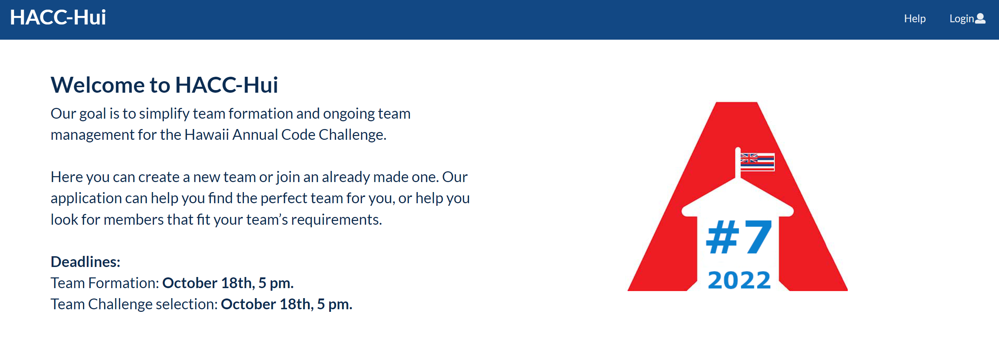

I always had an interest in web development since HTML was the first language I learned. Therefore, this semester, I decided to sign up for Round 2 (ICS 414), which was a continuation of ICS 314 that I took in Spring 2023. Although ICS 414 was not a traditional lecture class with exams, as I sat down to reflect on this past semester, I realized how much I learned from this course. In this class, our professor who also served as the client/customer, wanted us to convert a website called HACC (Hawaii Annual Code Challenge) HUI from Semantic UI to Bootstrap. However, I quickly found out this can be a bit challenging, as some components were restricted only to Semantic UI, and we had to find a similar component in Bootstrap. In addition to this, we had to convert from classes into arrow functions, which I ran into problems occasionally as this also involves handling with React components like withTracker. The last main task was to create a new functionality with the website, where the admin can automatically clear the existing database in preparation for the next HACC.
ICS 414 provided me with insight on what a career in software development might look like. In this class, from the beginning, we were put into groups which stayed with us for the whole semester. From this, it helped further develop my soft skills like communication, leadership, and collaboration. Working with other people also allowed me to see how problems can be solved/coded in different ways and how each one of us has our own coding style. Because we were given a codebase to work with, this was also a representation of the real world, as often times you would have to work with code you did not write and edit or add to it. ICS 414 also reinforced topics that were covered in ICS 314, as I realized I had forgotten a lot over the summer break. In the beginning I had to review my ICS 314 such as topics like TestCafe and using MongoDB. Overall, I really enjoy this class because it provided me with tools that I believe is practical in the real world. For me, it is very satisfying to work on a project with people and see how the project progresses over time and comes together. Although I am still a beginner, I felt like I gained key takeaways on how to improve a user’s experience for navigating through a website. Learning to redirect users to another page after form submission, alphabetically sorting tables for easier navigation, and designing more user-friendly forms are skills I believe will be beneficial in future web development projects. As this course/Round 2 comes to an end, I am excited to continue building on these foundations I learned as I progress in my software development journey.